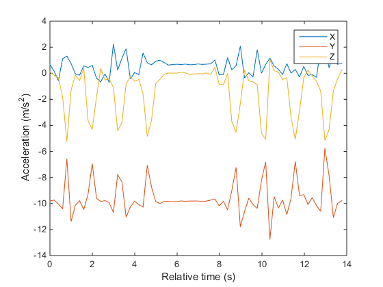
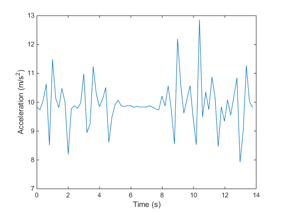

Counting Steps by Capturing Acceleration Data from Your Apple® iOS Device
This example shows how to collect acceleration data from an Apple iOS device and use it to count the number of steps taken.
This example requires Signal Processing Toolbox™.
Contents
Setting up the connection to your mobile device
In order to receive data from an Apple iOS device in MATLAB®, you will need the MATLAB Mobile™ app (version 2.0). You can download this app from App Store℠.
Use MATLAB Connector to allow connection between your desktop MATLAB session and MATLAB Mobile on your Apple iOS device. Your device must be able to connect to your desktop, either by being on the same network, using a VPN, or through a similar configuration.
Execute the connector command with a password of your choice.
connector on yourpassword;
DNS name: COMPUTERNAME.YOURDOMAIN.com IP address: 192.168.1.1 Use this link to test the MATLAB Connector: http://COMPUTERNAME.YOURDOMAIN.com:31415 If the test is successful, but MATLAB Mobile cannot connect, your computer might have multiple IP addresses. To determine the correct one, see Determining the DNS Name or IP Address of a Computer.
Your computer's DNS name and IP address are displayed on the MATLAB Command Window, along with a test link. Click on the test link to ensure that your desktop is ready to connect. The last digits after the colon on the test link correspond to the port that has been opened.
Now you can connect MATLAB Mobile to your desktop.
If you are launching MATLAB Mobile for the first time, select Connect to Your Computer. If you previously connected to the cloud or a different desktop, go to the Settings screen and select Add a Computer from the Connect to Your Computers section. On the Add a Computer screen, enter the DNS name or IP address that was displayed in the previous step. Then, enter the Connector password that you previously specified, as well as the port that was opened. Finally, press the Connect button. MATLAB Mobile should now be connected to your desktop MATLAB session.
Create a link to your mobile device
Use the mobiledev command to create an object that represents your mobile device.
m = mobiledev
m =
mobiledev with properties:
Connected: 1
Logging: 0
InitialTimestamp: ''
AccelerationSensorEnabled: 0
AngularVelocitySensorEnabled: 0
MagneticSensorEnabled: 0
OrientationSensorEnabled: 0
PositionSensorEnabled: 0
The displayed output should show Connected: 1, indicating that the mobiledev object has successfully established a connection to the app.
Prepare for data acquisition
Enable the acceleration sensor on the device.
m.AccelerationSensorEnabled = 1;
Start acquiring data
After enabling the sensor, the Sensors screen of MATLAB Mobile will show the current data measured by the sensor. The Logging property allows you to begin sending sensor data to mobiledev.
m.Logging = 1;
The device is now transmitting sensor data. A pause is included to allow for some measurements to be made before moving to the next steps, but is not required for logging to occur.
pause(15);
During logging, the device is held or kept in a pocket while walking around. This generates changes in acceleration across all three axes, regardless of device orientation.
Stop acquiring data
The Logging property is used to again to have the device stop sending sensor data to mobiledev.
m.Logging = 0;
Retrieve logged data
accellog is used to retrieve the XYZ acceleration data and timestamps transmitted from the device to mobiledev.
[a, t] = accellog(m);
Plot raw sensor data
The logged acceleration data for all three axes can be plotted together.
plot(t, a); legend('X', 'Y', 'Z'); xlabel('Relative time (s)'); ylabel('Acceleration (m/s^2)');
Process raw acceleration data
To convert the XYZ acceleration vectors at each point in time into scalar values, the magnitude is calculated. This allows large changes in overall acceleration, such as steps taken while walking, to be detected regardless of device orientation.
x = a(:,1); y = a(:,2); z = a(:,3); mag = sqrt(sum(x.^2 + y.^2 + z.^2, 2));
The magnitude is plotted to visualize the general changes in acceleration.
plot(t, mag); xlabel('Time (s)'); ylabel('Acceleration (m/s^2)');
The plot shows that the acceleration magnitude is not zero-mean. Subtracting the mean from the data will remove any constant effects, such as gravity.
magNoG = mag - mean(mag); plot(t, magNoG); xlabel('Time (s)'); ylabel('Acceleration (m/s^2)');
The plotted data is now centered about zero, and clearly shows peaks in acceleration magnitude. Each peak corresponds to a step being taken while walking.
Count the number of steps taken
findpeaks is a function from Signal Processing Toolbox that is used to find the local maxima of the acceleration magnitude data. Only peaks with a minimum height above one standard deviation are treated as a step. This threshold should be tuned experimentally to match a person's level of movement while walking, hardness of floor surfaces, etc.
minPeakHeight = std(magNoG);
[pks, locs] = findpeaks(magNoG, 'MINPEAKHEIGHT', minPeakHeight);
The number of steps taken is simply the number of peaks found.
numSteps = numel(pks)
numSteps =
8
The peak locations can be visualized with the acceleration magnitude data.
hold on; plot(t(locs), pks, 'r', 'Marker', 'v', 'LineStyle', 'none'); title('Counting Steps'); xlabel('Time (s)'); ylabel('Acceleration Magnitude, No Gravity (m/s^2)'); hold off;
Clean up
Turn off the acceleration sensor and clear mobiledev.
m.AccelerationSensorEnabled = 0;
clear m;